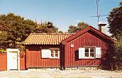

Södermalm i tid och rum. Stockholm
Lotsgatan 7Tomten uppläts 1730 och bebyggdes i anslutning härtill. Det är inte känt när flygeln och gårdshuset tillkom.

Tomten uppläts 1730 och bebyggdes i anslutning härtill. Det är inte känt när flygeln och gårdshuset tillkom.
